Welcome to KeepScore
KeepScore is a powerful yet simple to use
Australian Rules football scorecard application.
It manages and tracks all aspects of a game including:
- Game Time:
- Period by period Scores: configurable as either Quarters or Halves
- Goals Scored: including time / period scored and goal kicker.
- Team Rosters: load home / away team lists (supported devices)
- Team colors: personalise home team colors (supported devices)
- Team Logo: load a home team logo (supported devices)
- Post Results: Tweet / E-mail game progress scores and results
- Match Sheet: Print a match result sheet pre-populated with game details.
What's new in this release...
- Stability and performance updates
The following sections outline how to quickly and easily set up
and use KeepScore.
Display
Back to Top
Display Scoreboard on a large screen device
KeepScore can now display a large screen scoreboard when:
-
External screen(s) are available to your device:
either connected to your computer or via cast (e.g. Chromecast)
- You are using KeepScore on a compatible browser.
On a compatible device the 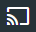
button will be displayed.
Just click the button to display a list of available screens and then select the desired screen.
Settings - Game Setup
Back to Top
Open the Settings screen by choosing Settings from the menu.
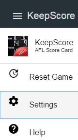
The Settings screen is where you configure Keepscore by entering the following details:
Team details - including name, Twitter handle (team logo and colors on supported devices)
Game details - Team Grade, period duration and number of periods in the game
Note: some details can not be entered whilst a game in in progress!
Team Details:
- Home Team Name: This is the name that will appear in Keepscore as well as
emails, tweets and score sheets.
- Home Team Twitter: If a team has a twitter username enter it here and it will be
used in tweeted progress scores.
- Home Team Logo: (supported devices only)
KeepScore allows you to load a club logo image file for the Home Team which
will appear the Scorecard screen.
For best results use images that display well at a resolution
of 50 x 50 pixels.
Note: maximum image file size allowed is 100KB!
To add a logo:
- Click the Team Logo button and select your file.
- To remove a logo click the Trash Can button.
- Home Team Colors: (supported devices only)
You can define the Home team color scheme by selecting both the text and
background colors used for the Home Team name placeholders.
- Use the Text Color and Background Color buttons to select a color.
The panel next to the buttons will display the Home Team name in the selected colors.
- Away Team Name: This is the name that will appear in Keepscore as well as
emails, tweets and score sheets.
- Away Team Twitter: If a team has a twitter username enter it here and it will be
used in tweeted progress scores.
Game Details:
- Grade: Grade at which the game is played. e.g. U/18 B Grade
- Periods: Number of periods in a game (Choice: 2 or 4)
This value cannot be altered whilst game is in progress.
- Period Length: Denotes the length of a game period (quarter / half) in minutes.
When time elapsed exceeds this value time is shown in
Red.
This value cannot be altered whilst game is in progress.
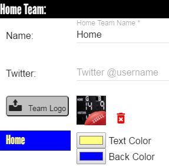
Game Controls
Back to Top
The game control menu items appear on the top right of screen and provide the
following controls:
Timer Menu:
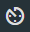
- Start (Qtr / Half) Starts the timer and sets the current game period.
- End (Qtr / Half): Stops the timer.
- Resume (Qtr / Half) Re-starts the timer to continue the current period.
Handy when a Qtr / Half is prematurely ended.
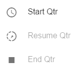
Share Menu:
- Email scores: Sends progress score whilst game is in progress and a full game summary
when game is over.
- Tweet score: Presents a Twitter screen populated with game score.
- Submit Result: Send match result in an email containing team scores, period by period scores and
goal scorers.
- Print Match Sheet Prints a pre-filled match result sheet with game result, period by period
scores and top goal kickers.
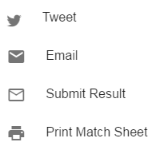
Reset Game:
To Reset the game, choose Reset Game from the menu.
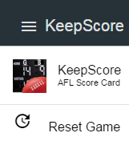
- When prompted to confirm that you wish to reset the game click Yes.
Note: All current game information is lost.
Keeping Score - Scorecard
Back to Top
The Scorecard screen is where the game score and goal scorer information is maintained.
Game status i.e. Half Time or 3rd Quarter and the time elapsed is displayed at the top of screen.
Team scores are changed by clicking the ... button and using the up / down arrows on the
Set Score screen.
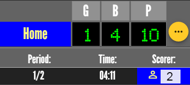
Note: When the period is in progress (timer is running) the Set Score screen will automatically close once
a score adjustment button has been clicked.
When a period has ended the Set Score screen will not close automatically to allow for multiple adjustments.
Clicking the close button X will return you to the Scorecard screen.
When a goal is scored will a goal entry will be displayed below the team score area.
The goal entry displays the period and time at which the goal was scored as well as providing
an input to allow you to record the jersey number of the goal kicker.
Note: Goals recorded when a period is not in progress (score adjustments) are prefixed with a *)
Summary
Back to Top
This screen displays a summary of the game in progress including:
- Period by Period scores: Game scores at the end of each peiod (quarter or half).
- Team Goal Kickers: A list of goal kickers and their totals for each team.
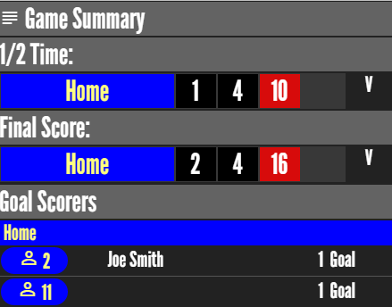
If a Team List has been provided (compatible devices) the goal scorer summary will include
the name of the player if their jersey number is in the team list.
Team Lists
Back to Top
This screen allows Team Lists to be uploaded to KeepScore.
When a team list has been provided KeepScore will display the players
name in team goal kicker lists in the summary screen and match results (printed or email).
Note: The Team Lists menu option is only available on compatible devices.
Open Team Lists screen by choosing Team Lists from the menu.
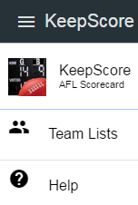
Note: Team Lists cannot be loaded once a game has started.
The Team Lists menu option will not be visible whilst a game is in progress!
Use the Reset Game menu option to prepare a new game and load team lists.
To load a team list click the relevant teams Team List button and selecting a team roster file.
To delete a team list click the Delete button.
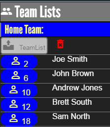
Team List File Format
Team list files are text files that contain player numbers and names
in a specific format and follow some basic rules:
First line in the file must start with the text #teamlist
Each subsequent line is a comma delimited player entry containing: Number, First Name, Last Name
Each player number can only appear once in the file. (File will not be loaded if duplicates are found)
Files that do not adhere to these rules will not be loaded!
Get Sample File
Example:
#teamlist
2,Joe,Bloggs
4,Sam,Smith
10,Bill,Brown
Invalid duplicate number entry example:
#teamlist
2,Joe,Bloggs
4,Sam,Smith
10,Bill,Brown
2,John,White